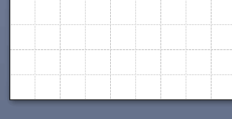
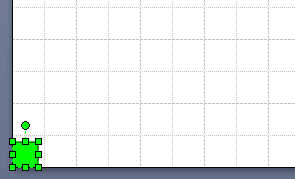

Постановка задачи
Речь идет о методах Drop и DropMany в Visio.
expression.Drop(ObjectToDrop, xPos, yPos)
Мы знаем, что в качестве ObjectToDrop может выступать как мастер, так и шейп, размещенный на странице. А в справке можно прочесть такую фразу: "If ObjectToDrop is a Master, the pin of the master is dropped at the specified coordinates". По логике - если объект является не мастером, а шейпом, то его может забросить совсем в другое место. Вот этой особенности и посвящена данная статья.
Предположим, нам понадобился такой сценарий:
- нарисовать квадрат (исходный шейп);
- размножить его 3 раза методом Drop со смещениями 1, 2 и 3 дюйма по X;
- сместить исходный шейп на дюйм вверх;
- размножить его еще 3 раза методом.
По сценарию ожидается такая картинка, как на рисунке Test1.

Эксперименты
Пытаемся проделать это с помощью макроса с вот таким текстом:
Dim shp As Visio.Shape
Public Sub Test2()
Set shp = ActivePage.DrawRectangle(0, 0, 0.4, 0.4)
shp.Cells("FillForegnd") = 3
DropSourceShape
ActiveWindow.DeselectAll
ActiveWindow.Select shp, visSelect
ActiveWindow.Selection.Move 0, 1
DropSourceShape
End Sub
Private Sub DropSourceShape()
x0 = shp.Cells("PinX").ResultIU
y0 = shp.Cells("PinY").ResultIU
Set rez1 = ActivePage.Drop(shp, x0 + 1, y0)
Set rez2 = ActivePage.Drop(shp, x0 + 2, y0)
Set rez3 = ActivePage.Drop(shp, x0 + 3, y0)
End SubИ видим совсем другую картину. Второй ряд шейпов рисуется не в одной строке с исходным шейпом, а неожиданно уходит вверх, хотя в операции Drop изменяется только координата X.
Такое впечатление, что сдвиг исходного шейпа еще раз добавляется к его копиям. Шейп вроде как "помнит", что его сдвинули и проталкивает этот сдвиг в копии.

Попытаемся избавиться от этого неожиданного эффекта. Первое,что приходит на ум - очистить переменную и заново присвоить ей значение перед вторым проходом. Для этого модифицируем текст следующим образом:
Public Sub Test3()
Set shp = ActivePage.DrawRectangle(0, 0, 0.4, 0.4)
shp.Cells("FillForegnd") = 3
DropSourceShape_2
ActiveWindow.DeselectAll
Set shp = ActivePage.Shapes(1)
ActiveWindow.Select shp, visSelect
ActiveWindow.Selection.Move 0, 1
DropSourceShape_2
End Sub
Private Sub DropSourceShape_2()
x0 = shp.Cells("PinX").ResultIU
y0 = shp.Cells("PinY").ResultIU
Set rez1 = ActivePage.Drop(shp, x0 + 1, y0)
Set rez2 = ActivePage.Drop(shp, x0 + 2, y0)
Set rez3 = ActivePage.Drop(shp, x0 + 3, y0)
Set shp = Nothing
End SubНе помогает. Шейпы рисуются точно так же.
На всякий случай добавляем еще DoEvents перед вторым проходом. И вот тут ситуация исправляется. Вторая линейка появляется на запланированном месте.
Причем для успеха пришлось и переменную очищать и DoEvents вставлять. Полумеры не приносят успеха. Кроме того, если попробовать вместо добавления DoEvents пройти макрос по шагам, то это тоже не поможет.
Public Sub Test4()
Set shp = ActivePage.DrawRectangle(0, 0, 0.4, 0.4)
shp.Cells("FillForegnd") = 3
DropSourceShapeDoEvents()
ActiveWindow.DeselectAll
Set shp = ActivePage.Shapes(1)
ActiveWindow.Select shp, visSelect
ActiveWindow.Selection.Move 0, 1
DoEvents
DropSourceShapeDoEvents()
End Sub
Private Sub DropSourceShapeDoEvents()
x0 = shp.Cells("PinX").ResultIU
y0 = shp.Cells("PinY").ResultIU
Set rez1 = ActivePage.Drop(shp, x0 + 1, y0)
Set rez2 = ActivePage.Drop(shp, x0 + 2, y0)
Set rez3 = ActivePage.Drop(shp, x0 + 3, y0)
Set shp = Nothing
End SubРезультат достигнут, но объяснить его тяжело. Особенно влияние DoEvents с учетом опыта пошагового исполнения. Но есть еще варианты. Будем в каждом проходе вместо исходного шейпа получать и размножать его копию, а после прорисовки удалять ее. Тем самым уберем ненужную "память" шейпа. Ведь копия каждый раз создается как новый шейп, значит памяти не имеет.
Теперь текст такой:
Public Sub Test5()
Set shp = ActivePage.DrawRectangle(0, 0, 0.4, 0.4)
shp.Cells("FillForegnd") = 3
DropCopy
ActiveWindow.DeselectAll
Set shp = ActivePage.Shapes(1)
ActiveWindow.Select shp, visSelect
ActiveWindow.Selection.Move 0, 1
DropCopy
End Sub
Private Sub DropCopy()
shp.Copy 1
ActivePage.Paste 1
Set shp1 = ActiveWindow.Selection(1)
x0 = shp1.Cells("PinX").ResultIU
y0 = shp1.Cells("PinY").ResultIU
Set rez1 = ActivePage.Drop(shp1, x0 + 1, y0)
Set rez2 = ActivePage.Drop(shp1, x0 + 2, y0)
Set rez3 = ActivePage.Drop(shp1, x0 + 3, y0)
shp1.Delete
End SubРезультат опять нормальный, но в отличие от предыдущего варианта, он поддается объяснению. Шейп новый, "память" отсутствует. Ухищрения типа очистки переменной и DoEvents не нужны.
Наконец, пробуем последний вариант. Берем текст от самого первого макроса (который не работал) и после Drop еще раз прописываем PinX, PinY, вычисленные по той же самой формуле.
Public Sub Test6()
Set shp = ActivePage.DrawRectangle(0, 0, 0.4, 0.4)
shp.Cells("FillForegnd") = 3
DropAndCorrect
ActiveWindow.DeselectAll
ActiveWindow.Select shp, visSelect
ActiveWindow.Selection.Move 0, 1
DropAndCorrect
End Sub
Private Sub DropAndCorrect()
x0 = shp.Cells("PinX").ResultIU
y0 = shp.Cells("PinY").ResultIU
Set rez1 = ActivePage.Drop(shp, x0 + 1, y0)
Set rez2 = ActivePage.Drop(shp, x0 + 2, y0)
Set rez3 = ActivePage.Drop(shp, x0 + 3, y0)
rez1.Cells("PinX") = x0+1
rez1.Cells("PinY") = y0
rez2.Cells("PinX") = x0+2
rez2.Cells("PinY") = y0
rez3.Cells("PinX") = x0+3
rez3.Cells("PinY") = y0
End SubИ ведь оно работает! В операции Drop лишняя "память" мешается, но в самом-то исходном шейпе координаты нормальные. И повторное вычисление по той же формуле с прямой записью в ячейки смещает созданные шейпы в нужную позицию.
Рассуждения
Как можно объяснить подобное поведение?
По-видимому, причина кроется в отличии конструкции мастера от конструкции шейпа. Мастер аналогичен странице, на которой размещен шейп. И метод Drop рассчитан именно на такую конструкцию.
Тогда при использовании шейпа в качестве ObjectToDrop Visio может где-то во внутренней памяти попытаться создать аналог мастера. То есть добавить к шейпу страницу. И прототипом такой страницы будет страница документа. Вот здесь и появляется зависимость от смещения исходного шейпа относительно страницы.
Псевдо-мастер явно создается один раз при обнаружении нового исходного шейпа для операции Drop. В нашем случае - при первом использовании.
Потом исходный шейп смещается относительно страницы. Но с учетом того, что шейп превращен в псевдо-мастер, псевдо-страница тоже сместилась, причем настолько же. Отсюда и получается удвоенное смещение для операции Drop. И такой псевдо-мастер будет действовать до тех пор, пока не будет использован другой исходный шейп. Поэтому срабатывает опыт с предварительным копированием исходного шейпа.
А почему срабатывает повторный расчет? Потому что это уже не операция Drop. Теперь используется истинное значение PinY шейпа без всяких псевдо-страниц.
Таким образом, найдено три способа исправления данной особенности операции Drop. Первый (с очисткой переменной) следует отбросить из-за его нечеткости. Второй (промежуточная копия) и третий (дополнительное перемещение) объяснимы и работают. Какой из них выбрать - зависит от ситуации. Третий выглядит более надежным, если не помешает тот факт, что сначала копия будет заброшена в другую область. Иногда это может мешать.
Выводы
- Операцию Drop с шейпом в качестве исходного объекта следует использовать осторожно. Нужно помнить, что смещение исходного шейпа может исказить результат.
- Для исправления ситуации можно использовать промежуточное копирование исходного шейпа с последующим уничтожением копии.
- Также можно использовать повторный расчет и корректировку положения копий путем прямой записи координат.